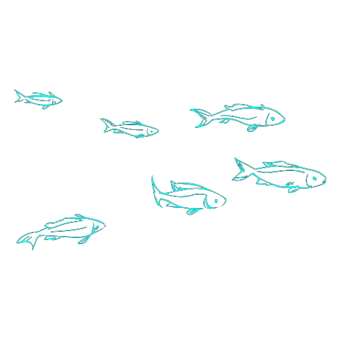
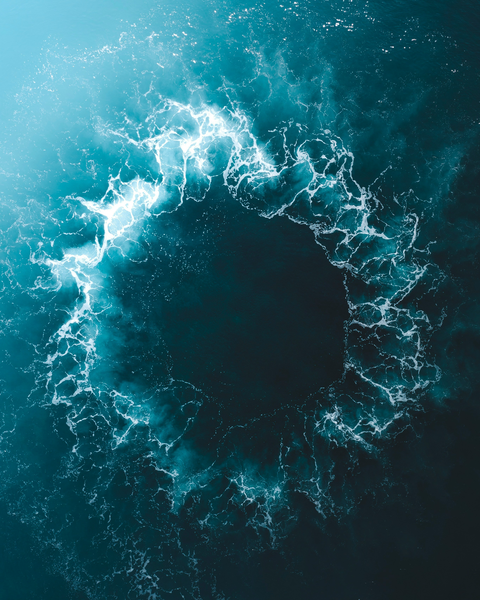
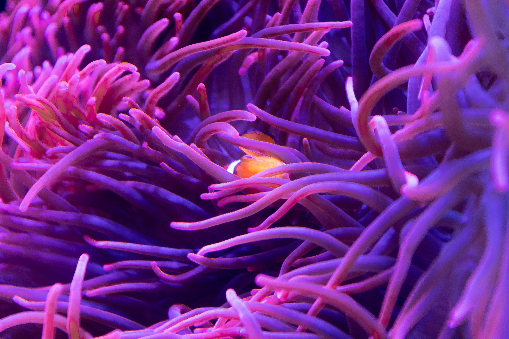
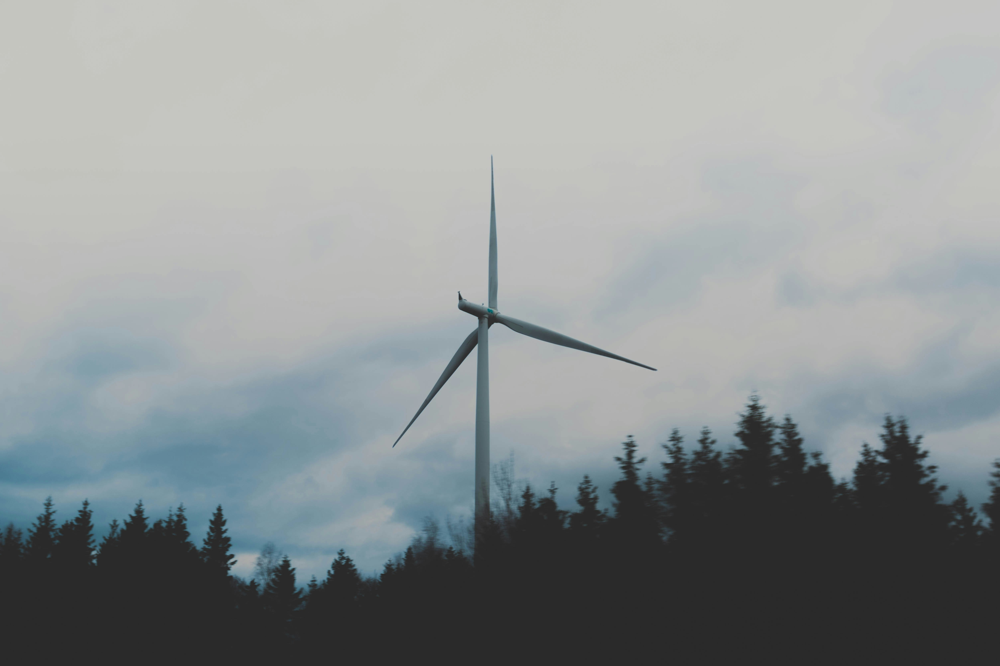

Transformando dados em decisões para


Protegendo os Oceanos
Nosso Dever e Obrigação
Os oceanos cobrem 71% da superfície da Terra e são essenciais para a vida no planeta. Eles regulam o clima, produzem 70% do oxigênio que respiramos, fornecem alimentos e medicamentos, e suportam atividades comerciais e recreativas. No entanto, nossos oceanos estão sob ameaça.
Impactos das Atividades Humanas
e das Mudanças Climáticas:
-
Aquecimento Global
Os oceanos absorvem 90% do excesso de calor da atmosfera e cerca de 2,9 bilhões de toneladas de CO2 anualmente. Mas essa capacidade está diminuindo devido ao aumento da temperatura e da acidez da água, afetando a vida marinha e os processos biológicos críticos.
-
Poluição Marinha
Plástico, esgoto e derramamento de petróleo são alguns dos principais poluentes que ameaçam a vida marinha e a saúde dos oceanos.
-
Poluição Marinha
Plástico, esgoto e derramamento de petróleo são alguns dos principais poluentes que ameaçam a vida marinha e a saúde dos oceanos.
-
Sobrepesca
A pesca excessiva está levando muitas espécies marinhas ao colapso. A captura em grande escala reduz drasticamente as populações de peixes, interferindo nos ecossistemas marinhos e afetando a biodiversidade.
-
Destruição de Habitats Marinhos
A construção de infraestrutura costeira, como portos, marinas e áreas urbanas, bem como a mineração submarina, resulta na destruição de habitats essenciais para muitas espécies marinhas.
-
Acidificação dos Oceanos
O aumento das emissões de CO2 não só contribui para o aquecimento global, mas também leva à acidificação dos oceanos. O CO2 dissolvido na água do mar forma ácido carbônico, que diminui o pH da água.

Planejamento Espacial Marítimo
PEM
Para enfrentar esses desafios, o Planejamento Espacial Marítimo (PEM) é crucial.
O PEM organiza o uso do espaço marinho de maneira sustentável, garantindo que as atividades humanas não comprometam a saúde dos ecossistemas marinhos.
Junte-se a Nós na Preservação dos Oceanos
Proteger nossos oceanos é uma responsabilidade compartilhada
Adote práticas sustentáveis, apoie políticas de conservação e ajude a promover o Planejamento Espacial Marítimo para garantir um futuro saudável para nossos oceanos e para nós mesmos.
Soluções Urgentes
-

Processo de Planejamento
O processo de planejamneto ocorre com a identificação de áreas com multiplos usos, o mapeamento de recursos marinhos, a avaliação de impacto ambiental e a consulta publica.
-

Identificação de Áreas Críticas
O PEM tem a importância de identificar áreas críticas, como habitats sensíveis, rotas de migração de espécies, zonas de pesca importantes e rotas de navegação, para garantir a proteção adequada dessas áreas
-

Integração de Atividades
O planejamento espacial marítimo integra várias atividades, como pesca, transporte marítimo, turismo, exploração de petróleo e gás, energia renovável offshore e conservação marinha, para garantir o uso sustentável dos recursos oceânicos.
-

Redução de Conflitos
o planejamento espacial marítimo pode ajudar a reduzir conflitos entre diferentes usuários do oceano, fornecendo um quadro claro para a tomada de decisões e a alocação de recursos.
-

Melhoria da Eficiência
o planejamento espacial marítimo pode melhorar a eficiência das operações marítimas, ao identificar sinergias entre diferentes atividades e evitar sobreposições desnecessárias.
-

Gestão de Riscos
o planejamento espacial marítimo pode ajudar a gerenciar os riscos associados às atividades oceânicas, como derramamentos de óleo, colisões de navios e impactos ambientais, ao estabelecer medidas de precaução e resposta.
-

Fomento à Inovação
-
Integração de Atividades:
Mencione como o planejamento espacial marítimo pode estimular a inovação, ao incentivar o desenvolvimento de tecnologias e práticas mais sustentáveis para as atividades oceânicas.
-
Integração de Atividades:

Benefícios do PEM
Após fazermos a análise de soluções urgente vimos a uma oportunidade de levarmos esse conhecimento para o ramo empresarial auxiliando empresas a terem melhores escolhas.
Com base nisso iremos apresentar os benefícios de uma empresa cogitar em usar o PEM para encontrar a melhor forma de implementar o seu comercio
Principais Beneficios
-
Otimização de Recursos:
Ao integrar diferentes atividades oceânicas, o planejamento espacial marítimo permite que sua empresa otimize o uso dos recursos marinhos, reduzindo custos operacionais e maximizando os benefícios econômicos.
-
Acesso a Novos Mercados:
Ao cumprir as regulamentações de planejamento espacial marítimo, sua empresa pode ganhar acesso a novos mercados e oportunidades de negócios, especialmente em setores emergentes, como energia renovável offshore e turismo sustentável.
-
Reputação Sustentável:
O compromisso com o planejamento espacial marítimo demonstra responsabilidade ambiental e social, o que pode melhorar a reputação de sua empresa perante os clientes, investidores e outras partes interessadas.
-
Resiliência a Riscos:
Ao adotar práticas sustentáveis e medidas de mitigação de riscos, sua empresa pode se tornar mais resiliente a eventos adversos, como mudanças climáticas, desastres naturais e pressões regulatórias.
-
Inovação Competitiva:
Ao participar ativamente do processo de planejamento espacial marítimo e contribuir com soluções inovadoras, sua empresa pode ganhar uma vantagem competitiva no mercado, diferenciando-se pela excelência ambiental e operacional.
-
Resiliência às Mudanças Climáticas
Ao considerar os efeitos das mudanças climáticas no planejamento e manejo do espaço marítimo, o PEM pode ajudar a aumentar a resiliência dos ecossistemas marinhos e das comunidades costeiras, mitigando os impactos negativos das mudanças climáticas, como a acidificação dos oceanos e o aumento do nível do mar.
Segurança Jurídica:
O planejamento espacial marítimo oferece segurança jurídica ao definir claramente as áreas de uso e as restrições associadas, reduzindo o risco de litígios e sanções legais para sua empresa.
Consequências da Inação
Caso o PEM e outras soluções não sejam implementadas
A "inação dos oceanos" no contexto ecológico refere-se à incapacidade ou falha em tomar medidas eficazes para proteger e restaurar a saúde dos oceanos. Isso inclui a falta de ações para combater a poluição, a sobrepesca, a destruição de habitats marinhos e as mudanças climáticas.
Soluções Urgentes:
-
Maré Vermelha:
Proliferação de fitoplâncton tóxico devido ao excesso de nutrientes e poluição.
-
Maré Negra:
Derramamentos de petróleo que destroem a fauna e flora marinhas, afetando a pesca e o turismo.
-
Degradação de Ecossistemas:
Perda de biodiversidade e colapso de habitats críticos como recifes de corais e manguezais.
Técnologias Essenciais
Tecnologias Essenciais para o Planejamento Espacial Marítimo (PEM)
Para garantir a saúde e sustentabilidade dos nossos oceanos, utilizamos tecnologias avançadas que permitem uma gestão eficaz e integrada dos recursos marinhos. Conheça as principais ferramentas que tornam o PEM possível:
-
Sensoriamento Remoto e Satélites:
Utilizamos satélites para monitorar continuamente os oceanos, fornecendo imagens de alta resolução que ajudam a detectar mudanças ambientais, padrões climáticos e atividades humanas. Esses dados são cruciais para a tomada de decisões informadas.
-
Sistemas de Informação Geográfica (SIG):
Ferramentas SIG são essenciais para analisar dados espaciais e geográficos, permitindo identificar áreas críticas e planejar o uso sustentável do espaço marinho. Com o SIG, podemos visualizar e entender melhor a distribuição e o impacto das atividades humanas e naturais.
-
Sensoriamento Remoto e Satélites:
Utilizamos satélites para monitorar continuamente os oceanos, fornecendo imagens de alta resolução que ajudam a detectar mudanças ambientais, padrões climáticos e atividades humanas. Esses dados são cruciais para a tomada de decisões informadas.
-
Infraestrutura Nacional de Dados Espaciais(INDE):
A INDE oferece uma plataforma integrada para o compartilhamento e gestão de dados espaciais. Utilizamos essa infraestrutura para acessar, integrar e analisar dados de diversas fontes, garantindo uma base sólida para o planejamento e a gestão dos recursos marinhos. Saiba mais visitando o site da INDIE
-
Drones Marítimos:
Veículos aéreos e subaquáticos não tripulados coletam dados em tempo real sobre a qualidade da água, biodiversidade e impactos humanos, oferecendo uma visão detalhada e atualizada do ecossistema marinho
-
Modelagem e Simulação:
Software avançado de modelagem cria simulações de cenários futuros, permitindo avaliar os impactos de diferentes atividades e políticas sobre os ecossistemas marinhos. Essas simulações são fundamentais para o planejamento estratégico e a mitigação de riscos.
-
Plataformas de Dados em Tempo Real
Sistemas integrados que agregam e analisam dados de múltiplas fontes em tempo real, fornecendo informações cruciais para a tomada de decisões rápidas e precisas. Essas plataformas garantem que as ações sejam baseadas em dados atualizados.
-
Inteligência Artificial e Machine Learning:
Algoritmos de IA processam grandes volumes de dados ambientais e humanos, identificando padrões e previsões que ajudam a otimizar as estratégias de conservação e uso sustentável dos oceanos
-
Boias Oceanográficas e Sensores Subaquáticos:
Equipamentos que medem variáveis físicas, químicas e biológicas do oceano, monitorando a saúde do ambiente marinho e detectando mudanças em tempo real. Esses dados são vitais para entender e responder a alterações ambientais.
-
Plataformas de Colaboração Online:
Ferramentas digitais facilitam a comunicação e cooperação entre cientistas, governos, ONGs e comunidades locais, promovendo uma gestão compartilhada e transparente dos recursos marinhos.